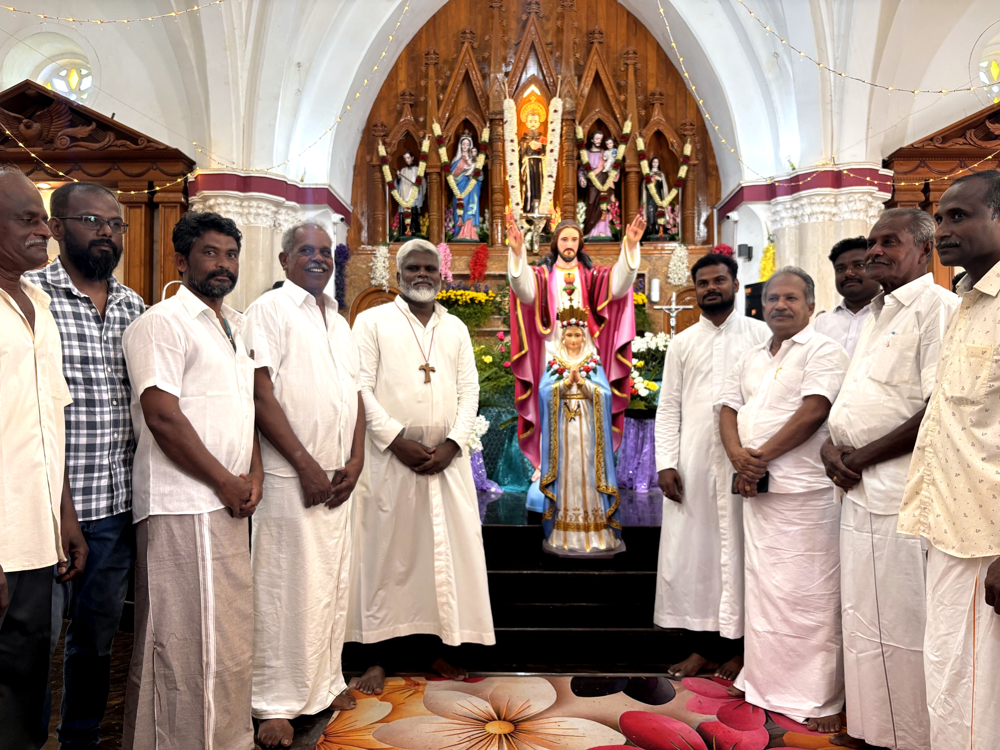
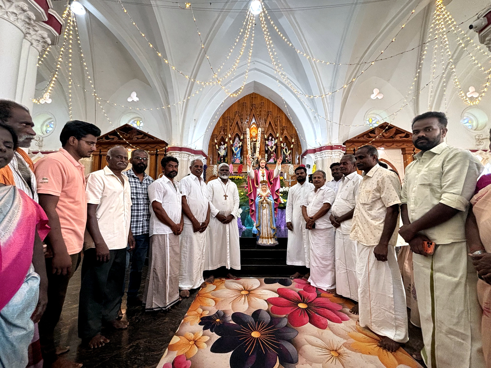

வரலாற்று காலவரிசை
ஆலயத்தின் ஆரம்பக் கட்ட தூய்மைப்பணியில் இருந்து முதல் திருப்பலி மற்றும் திறப்பு விழா வரையிலான அழகிய அத்தியாயங்கள்.
தூய்மைப்படுத்தும் பணி
ஆலய கட்டுமானத்திற்காக தேர்ந்தெடுக்கப்பட்ட நிலத்தை தூய்மைப்படுத்தும் பணிகள் இறைவனின் துணையோடு தொடங்கின. முட்புதர்கள் அகற்றப்பட்டு, தரை சமன்படுத்தப்பட்டு ஆலய அஸ்திவாரத்திற்கு வழிவகுக்கப்பட்டது.


ஆரம்ப ஜெப நிகழ்வு
பணிகள் செம்மையாக நடைபெற, ஊர் மக்கள் மற்றும் பங்குத்தந்தையர் இணைந்து நடத்திய கூட்டுப் பிரார்த்தனை மற்றும் ஆரம்ப ஜெப நிகழ்வு. அஸ்திவாரக்கல் நடும் முன் இந்த விழா நடைபெற்றது.

.jpg)
கட்டுமான தொடக்கம்
ஆலயத்தின் அஸ்திவாரப் பணிகள் முறையாகத் தொடங்கின. கற்களும் மணலும் கொண்டு ஆலயம் உறுதியுடன் அமைப்பதற்கான முதல் கட்டுமானக் கட்டமைப்புப் பணிகள் நடைபெற்றன.
.jpg)
.jpg)
பாதி கட்டுமான நிலை
செங்கற்கள் மற்றும் கான்கிரீட் தூண்கள் கொண்டு ஆலயத்தின் சுவர்கள் பாதி உயரத்திற்கு எழுப்பப்பட்ட நிலை. ஆலயத்தின் முழுமையான வடிவம் மெல்லத் தெரியத் தொடங்கிய தருணம்.
.jpg)
மோல்டிங் மற்றும் கட்டமைப்பு வேலைகள்
கூரைப்பகுதி மோல்டிங் (Roof Molding) எனப்படும் கூரை கான்கிரீட் அமைப்பதற்கான உன்னத வேலைகள் நடைபெற்றன. கம்பி கட்டுதல் மற்றும் இதர கட்டமைப்புப் பணிகள் துல்லியமாக மேற்கொள்ளப்பட்டன.


மோல்டிங் பணிக்குப் பிந்தைய கட்டுமான முன்னேற்றம்
2026 ஆம் ஆண்டில், மோல்டிங் பணிகள் நிறைவடைந்த பின் ஆலய கட்டுமானம் முக்கிய முன்னேற்றத்தை அடைந்தது. கோபுர அமைப்பு மேலும் உயர்த்தப்பட்டு, வெளிப்புற கட்டிட வடிவமைப்புகள் தெளிவாக உருவாகின. முக்கிய நுழைவாயில் பகுதி வடிவம் பெற்றதுடன், இறுதிக்கட்ட பணிகளுக்காக சாரங்கள் அமைக்கப்பட்ட நிலையில் கட்டுமானப் பணிகள் தொடர்ந்து நடைபெற்றன. இந்த கட்டம் ஆலயத்தின் இறுதி தோற்றம் உருவாகத் தொடங்கிய முக்கிய காலமாக அமைந்தது.
.jpeg)

நிலை வாசல் பூஜை
ஆலயத்தின் பிரதான நிலை வாசல் கதவுச் சட்டம் நிலைநிறுத்தப்படும் உன்னத நிகழ்வு. பாரம்பரிய முறைப்படி மாலைகள் அணிவிக்கப்பட்டு சிறப்பு பிரார்த்தனைகள் செய்யப்பட்டன.
.jpg)
(1).jpg)
ஆலய வர்ணப்பூச்சு
புதிய ஆலயம் தூய வெண்மை மற்றும் அரச நீல வர்ணங்கள் கொண்டு வர்ணப்பூச்சு பணிகள் நிறைவடைந்த தருணம். ஆலயத்திற்கு ஒரு தெய்வீக அழகைக் கொடுத்த அத்தியாயம்.
.jpg)
ஆலய மின்விளக்கு அலங்காரம்
மின்விளக்குகள் பொருத்தப்பட்டு இரவில் ஒளிரும் ஆலயத்தின் கம்பீரக் காட்சி. வண்ண விளக்குகள் ஆலயத்தின் வளைவுகளையும் கோபுரத்தையும் அழகாகப் பிரதிபலித்தன.
.jpg)
முதற்கட்ட சிறிய திருஉருவம்
ஆலயத்தில் பிரதிஷ்டை செய்யப்படுவதற்காக வடிவமைக்கப்பட்ட சலேத் மாதாவின் முதற்கட்ட சிறிய வடிவிலான திருஉருவம். இதன் மென்மையான முக பாவனைகளும் அமைதியான வண்ணங்களும் நேர்த்தியாக செதுக்கப்பட்டன.
(1).jpg)
முக்கிய திருஉருவத்தின் உருவாக்கம்
ஆலயப் பீடத்தில் நிறுவப்படுவதற்காக பிரம்மாண்டமான முறையில் செதுக்கப்பட்ட சலேத் மாதாவின் முக்கிய பெரிய திருஉருவத்தின் உருவாக்க வேலைப்பாடுகள். சிற்பி மெருகூட்டும் இறுதி வேலைகள் இதில் அடங்கும்.
(1).jpg)
.jpg)
திருஉருவ வரவேற்பு மற்றும் ஆலய நுழைவு
முடிக்கப்பட்ட சலேத் அன்னையின் திருஉருவம் கிராமத்திற்குள் ஊர்வலமாகக் கொண்டுவரப்பட்டு, புதிய ஆலயத்திற்குள் நுழைந்து பீடத்தில் முறைப்படி நிறுவப்பட்ட உன்னத தருணங்கள்.



முதல் திருப்பலி
29.05.2026 அன்று புதிய சலேத் மாதா ஆலயத்தில் முதலாவது திருச்சடங்கு நிகழ்வும் வரலாற்றுச் சிறப்புமிக்க முதல் திருப்பலியும் பங்குத்தந்தையின் தலைமையில் கிராம மக்களின் பெரும் மகிழ்ச்சியோடு கொண்டாடப்பட்டது.